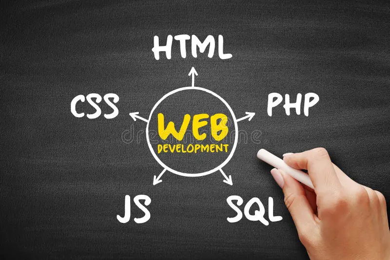

This page introduces the core building blocks of web development with added CSS styling.
Web development is the process of building and maintaining websites. It has three main pillars:
HTML provides the structure of a website through different elements and tags. Here are some examples:
| Tag | Purpose |
|---|---|
| <h1> - <h6> | Defines headings from largest to smallest. |
| <p> | Defines a paragraph of text. |
| <a> | Creates a hyperlink. |
| <img> | Embeds an image. |
| <table> | Creates a table of rows and columns. |
CSS (Cascading Style Sheets) is used to style and design the structure created by HTML. It controls layout, colors, fonts, and spacing. This page demonstrates how CSS can enhance the appearance of the same HTML content.
Bootstrap is a popular CSS framework that makes designing websites faster and easier. It provides pre-designed components such as navigation bars, buttons, tables, and forms, along with a responsive grid system.
Instead of writing all styles manually, developers can use Bootstrap classes to make webpages look modern and responsive quickly.
Example Bootstrap components will be shown in the Bootstrap version of this page.
JavaScript makes web pages interactive. It can validate forms, create animations, and update content dynamically. Although this page doesn't include JavaScript, it is an important part of web development.
Here's an example of an image and a useful resource link:
